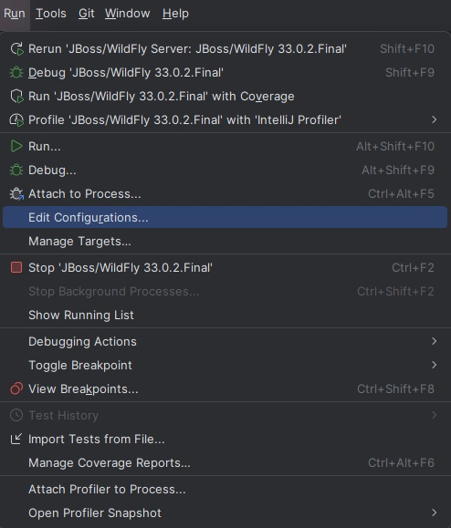
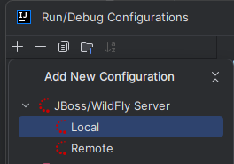
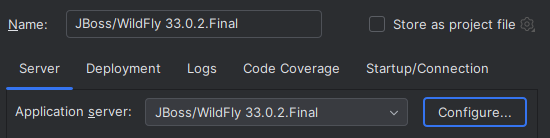
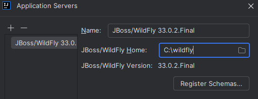
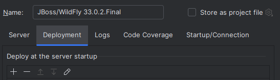
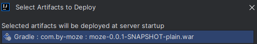
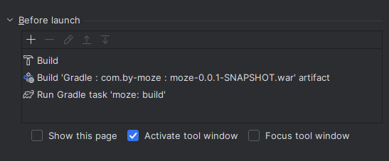
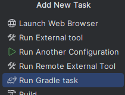
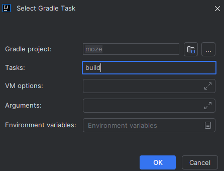

Une fois que votre projet Spring Boot est configuré pour générer un fichier WAR et que Tomcat est exclu, il est temps d'ajouter WildFly dans IntelliJ en tant que serveur et de configurer le déploiement automatique du projet.
Étapes
1. Ajouter WildFly comme serveur
Ouvrez IntelliJ et allez dans Run > Edit Configurations.

Cliquez sur le bouton + en haut à gauche et sélectionnez JBoss Server > Local.

Dans la fenêtre qui apparaît, spécifiez le répertoire d'installation de WildFly:
Sélectionnez le dossier WildFly (l'endroit où vous avez installé WildFly) et localisez le fichier standalone.bat (Windows) ou standalone.sh (Mac/Linux).


Validez en cliquant sur OK.
2. Configurer le déploiement du fichier WAR
Une fois le serveur ajouté, configurez le déploiement de votre application sur WildFly:
Dans la même fenêtre de configuration, allez dans l'onglet Deployment.

Cliquez sur + pour ajouter un artifact.
Sélectionnez Artifact > External Source et choisissez le fichier WAR que vous avez généré dans le répertoire build/libs/.

Validez.
3. Configurer Gradle pour rebuild automatiquement avant le lancement du serveur
Pour s'assurer que le projet est toujours reconstruit avant chaque démarrage de WildFly, vous pouvez configurer IntelliJ pour lancer la tâche Gradle build automatiquement avant le déploiement.
Dans la section Before launch, cliquez sur + et sélectionnez Run Gradle Task.


Dans la fenêtre suivante :
Sélectionnez votre projet.
Dans le champ Tasks, saisissez build.

Cliquez sur OK.
Vous verrez que l'étape Gradle build a été ajoutée dans la section Before launch.
4. Lancer et tester le projet
Cliquez sur Run ou Debug pour démarrer le serveur WildFly et déployer votre application.
Si tout est correctement configuré, l'application sera déployée sur http://localhost:8080/monProjet.
5. Vérifier le déploiement
Accédez à http://localhost:8080 dans votre navigateur pour voir si l'application est correctement déployée et fonctionne. Si vous avez un point d'entrée défini, l'application devrait s'afficher comme prévu.
Résultat attendu
À la fin de cette étape, WildFly sera configuré comme serveur dans IntelliJ, et chaque fois que vous démarrerez le serveur, le projet sera automatiquement rebuild avec Gradle et déployé sous forme de fichier WAR.